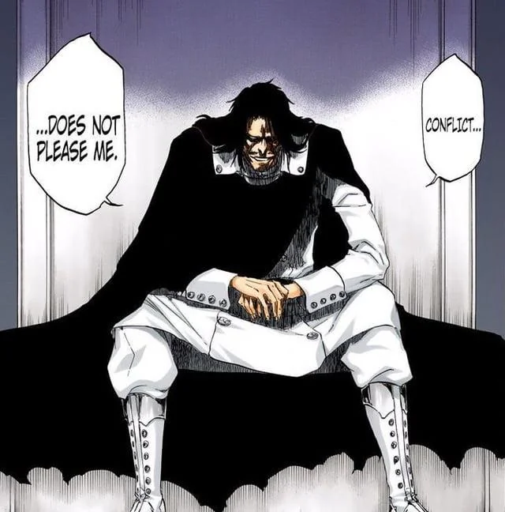

Robert Del Papa
Junior at St. Edward’s who loves to play games and hang out with fellow CS majors. Robert is currently looking to expand his horizons to be able to learn and grow from the things around him. Living life to the max and dedicated to give his best in all of his endeavors.
Interests
Video Games

Foreign Media

Cats